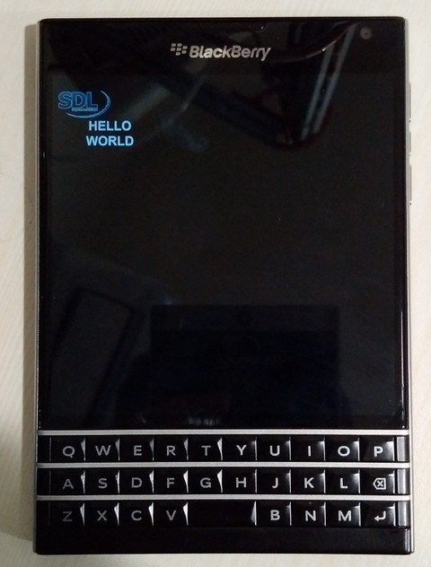

Steward
分享是一種喜悅、更是一種幸福
手機 - Blackberry Passport - Core Native (C/C++) - SDL v1.2 - Hello, world!
main.cpp
#include <stdio.h>
#include <stdlib.h>
#include <SDL.h>
int main(int argc, char* args[])
{
if (SDL_Init(SDL_INIT_VIDEO) != 0) {
printf("%s, failed to SDL_Init\n", __func__);
return -1;
}
SDL_Surface* screen = NULL;
screen = SDL_SetVideoMode(1440, 1440, 32, SDL_HWSURFACE | SDL_DOUBLEBUF);
if (screen == NULL) {
printf("%s, failed to SDL_SetVideMode\n", __func__);
return -1;
}
SDL_Surface* bmp = SDL_LoadBMP("app/native/hello.bmp");
if (bmp == NULL) {
printf("%s, failed to SDL_LoadBMP\n", __func__);
return -1;
}
SDL_ShowCursor(0);
SDL_BlitSurface(bmp, NULL, screen, NULL);
SDL_Flip(screen);
SDL_Delay(30000);
SDL_FreeSurface(bmp);
SDL_Quit();
return 0;
}
bar-descriptor.xml
<?xml version="1.0" encoding="utf-8" standalone="no"?>
<qnx xmlns="http://www.qnx.com/schemas/application/1.0">
<id>com.steward.sdl.ch1</id>
<name>ch1</name>
<filename>ch1</filename>
<versionNumber>1.0.0</versionNumber>
<buildId>1</buildId>
<description>Lession 1. Setting up SDL and Getting an Image on the Screen</description>
<author>Steward</author>
<authorId>gYAAgGE4qaHzBnzEAu8JKe4G1OI</authorId>
<asset path="main" entry="true" type="Qnx/Elf">main</asset>
<asset path="hello.bmp">hello.bmp</asset>
<asset path="libSDL-1.2.so.11" type="Qnx/Elf">lib/libSDL-1.2.so.11</asset>
<asset path="libTouchControlOverlay.so.1" type="Qnx/Elf">lib/libTouchControlOverlay.so.1</asset>
<permission system="true">run_native</permission>
<env var="LD_LIBRARY_PATH" value="app/native/lib"/>
</qnx>
Makefile
main: main.cpp
ntoarmv7-gcc main.cpp -g -o main libSDL-1.2.so.11 -Iinclude
blackberry-nativepackager -package main.bar bar-descriptor.xml -devMode -debugToken ${HOME}/.rim/debugtoken_q30.bar
clean:
rm -rf main
rm -rf main.bar
完成
